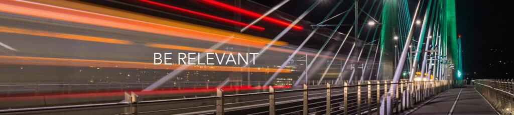
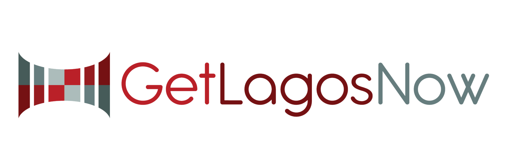

“When we’re talking about Diversity, it’s not a box to check. It’s a reality that should be deeply felt, and held, and valued by all of us.”
-Ava DuVernay
Reach a Global Audience Regardless of Location
There’s many benefits of having a website with multilingual abilities. It allows you to cater to audiences in different regions or countries who speak various languages. This helps you break geographical barriers and attract a broader audience by building your brand credibility and authority. A multilingual site conveys that you care about and value your audience’s diversity. This increases your credibility and establishes your brand as globally relevant.
Question: Many will ask, if I have a multi-lingual services site, how can I service that audience, as I don’t have a multi-lingual staff to support it? Good question! In fact, being clear, on the website, that all services and communications are available in English but you’re happy to work with their translator, opens up the door for you to be a more global professional that even works with the hearing impaired, that also cares to make your work and services more available.
Expand Your Market Potential
For businesses, a multilingual site can unlock opportunities in new markets. You’re more likely to convert customers if they can understand your products or services in their preferred language. This can directly lead to an increase in sales or service adoption while staying competitive, as statistics show that users prefer websites in their native language, even if they speak a second language. According to Statistica in 2020, “73 percent of global consumers preferred product reviews in their native language when shopping online.” Whereas in July of 2020 CSA studies found, “Based on a survey of 8,709 global consumers in 29 countries in Europe, Asia, North America, and South America, CSA Research found that 76% of online shoppers prefer to buy products with information in their native language. In addition, 40% will never buy from websites in other languages.”
Point to consider: If your competitors already have multilingual sites, not having one puts you at a disadvantage.

Stand OUT and Stay Inclusive
Providing content in multiple languages promotes inclusivity, making your site accessible to more people, including non-native speakers of your primary language. When visitors can interact with your content in their native language, it enhances their user experience, increases engagement, and builds trust. A more personalized experience can lead to higher conversion rates.
Boost SEO (Search Engine Optimization) Benefits
- A multilingual site allows you to rank in multiple languages and countries on search engines like Google, Bing, Explorer or FireFox.
- It improves your site’s visibility for non-English keywords, driving organic traffic from international markets.

Author: Michelle Lagos